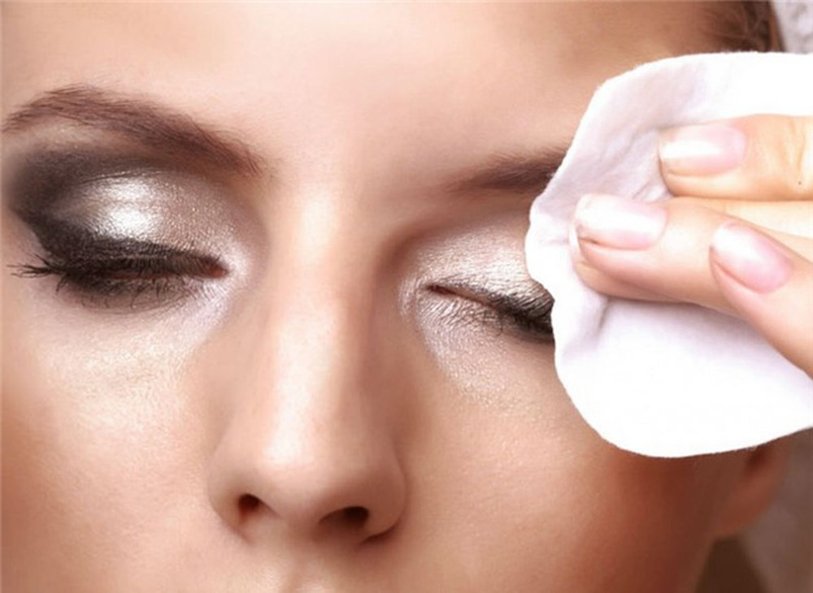
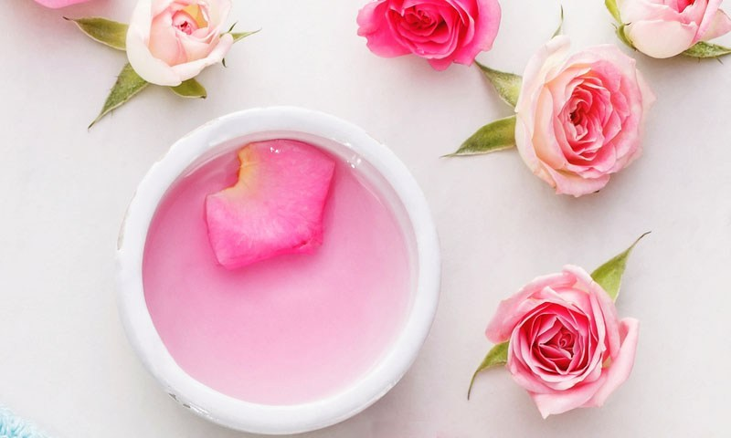
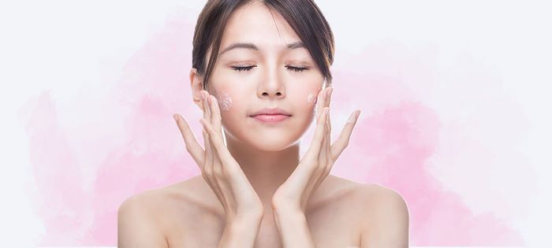

SKINCARE LÀ GÌ? TẠI SAO PHẢI SKINCARE? Skincare là một thuật ngữ nói về quy trình chăm sóc da cơ bản được thực hiện hàng ngày. Để đạt được hiệu quả tối đa khi Skincare bạn cần thực hiện chuẩn theo quy trình và theo lịch trình cụ thể. Điều này sẽ khiến làn da của bạn khỏe mạnh từ tận sâu bên trong. Giúp chống chọi được các tác động từ môi trường, khí hậu. Với nền tảng da cơ bản tốt, bạn có thể sẵn sàng để tiến hành các liệu trình điều trị cho da. Nếu da đang trong tình trạng tổn thương hoặc gặp vấn đề nào đó. Bước 1: Tẩy trang  Nhiều bạn còn chưa coi trọng bước này vì nghĩ là mình không make up nên không cần tẩy trang. Thật ra thì kể cả bạn không make up, bạn vẫn nên tẩy trang ít nhất 1-2 lần/tuần để làm sạch sâu cho da. Nhiều bạn còn hỏi mình là bôi kem chống nắng thôi không make up thì có phải tẩy trang không? Xin thưa là bôi kem chống nắng cũng tính là make up rồi đó ạ, và PHẢI TẨY TRANG HÀNG NGÀY! Bước 2: Rửa mặt Những suy nghĩ sai lầm phổ biến khi mua sữa rửa mặt là.: “sữa rửa mặt là thứ để rửa đi, phí của, cũng không cần thiết lắm“, hoặc “rửa mặt phải chọn loại thật sạch. Rửa xong mặt phải khô cong không còn tí dầu nào mới là sạch” (nhất là các bạn da dầu). Ở đây mình xin đính chính lại nhé, sữa rửa mặt phù hợp là loại sữa rửa mặt giúp bạn làm sạch bụi bẩn. Sạch bẩn trên da mà không hề lấy đi độ ẩm của da bạn (nhưng không có nghĩa là sẽ kiêm tẩy trang). Rửa mặt giúp refresh làn da để thẩm thấu các bước dưỡng da sau đó tốt hơn. Nếu bạn chọn sai sữa rửa mặt đồng nghĩa với việc làn da bạn sẽ bị ảnh hưởng: nhẹ thì khô da, nặng thì kích ứng mẩn ngứa, gây ảnh hưởng đến việc thẩm thấu các bước dưỡng sau. Thậm chí ví dù cho bạn có dưỡng da đủ chuẩn thế nào đi chăn nữa nhưng sáng dậy, khi rửa mặt, sữa rửa mặt khô quá cũng lấy hết đi toàn bộ công sức dưỡng da cả đêm của bạn đó. Vậy là công cốc! Bước 3: Toner cân bằng da  Các bạn hay gọi là nước hoa hồng ý, nhưng thực chất thì không phải toner nào cũng làm từ nước hoa hồng cả. Vì thế khái niệm này không thực sự làm chuẩn cho lắm. Cũng giống kiểu face mist, các bạn hay gọi là xịt khoáng nhưng không phải face mist nào cũng làm từ nước khoáng vậy! Toner là gì? Thực chất rất khó có thể định nghĩa toner 1 cách chính xác nhất. Cũng có rất nhiều loại toner nhưng có 2 loại nổi bật nhất đó là toner kiểu phương Tây và toner kiểu châu Á. Tuy nhiên, nói 1 cách tóm tắt thì, Toner theo kiểu phương Tây chính là “nước cân bằng da”. Roner có tác dụng cân bằng lại độ pH cho da, làm sạch bụi bẩn. Đánh tan lớp trang điểm còn sót lại nếu tẩy trang và rửa mặt không sạch, làm se khít lỗ chân lông. Bước 4: Serum – tinh chất dưỡng da Trong 1 bộ dưỡng da thì bao giờ serum cũng là sản phẩm có khối lượng nhỏ nhất và giá đắt nhất. Nói chung thì serum là những sản phẩm dạng lỏng chứa các hoạt chất sinh học cực nhỏ và đậm đặc. Serum chứa hoạt chất nhiều gấp 10 lần các mỹ phẩm dạng kem khác. Serum có thể dễ dàng được hấp thụ vào cơ thể. Chính vì thế serum sẽ có tác dụng nhanh hơn và tiết kiệm hơn nhiều. Theo nghiên cứu của các nhà khoa học, các sản phẩm dạng kem chỉ có khả năng tác động đến lớp biểu bì và thân bì của da. Kem không thể thấm sâu tới lớp hạ bì. Ngược lại, serum không chỉ thẩm thấu nhanh mà còn thấm sâu đến tận 3 lớp. Serum thẩm tháu từ biểu bì, thân bì và hạ bì. Điều này giúp làn da bạn được nuôi dưỡng toàn diện hơn. Tùy vào nhu cầu của da mà có rất nhiều các loại serum khác nhau như: serum chống lão hóa, serum sáng da, serum vitamin C,… Bước 5: Kem dưỡng da ngày/đêm  Kem dưỡng da cũng như serum, có rất nhiều loại để phù hợp cho nhu cầu của từng loại da: da dầu, da khô, da hỗn hợp. Phù hợp cho từng độ tuổi từ dậy thì, thành niên, trung niên,… Kem dưỡng da thường được phân làm kem ngày và kem ban đêm. kem ngày có kết cấu mỏng nhẹ hơn giúp đỡ bí da khi chúng ta hoạt động cả ngày. Còn các loại kem ban đêm thì thường dưỡng ẩm cao giúp da hồi phục trong lúc chúng ta ngủ.